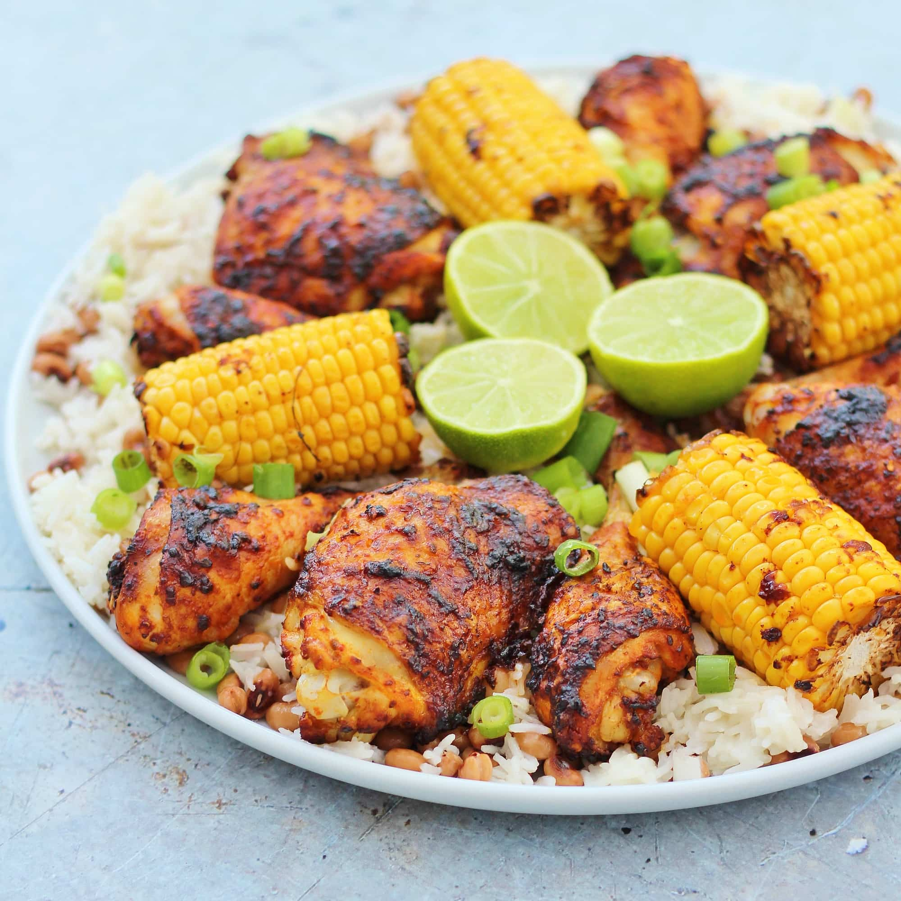
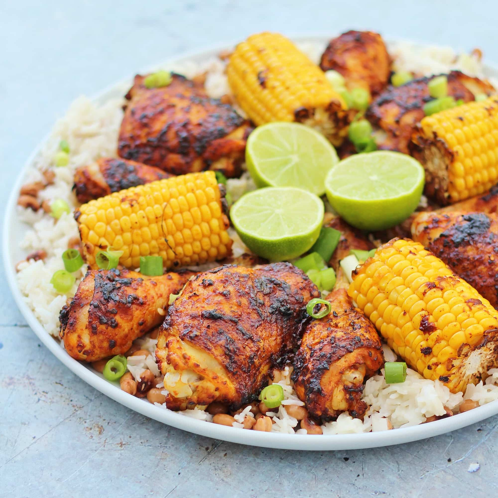

FISHAWAYS
Nando's (/nænˈdoʊz/) is a South African multinational fast food chain that specialises in flame-grilled peri-peri style chicken.[a] Founded in Johannesburg in 1987, Nando's operates over 1,200 outlets[1] in 30 countries. Their logo depicts the Rooster of Barcelos, one of the most common symbols of Portugal.
 
